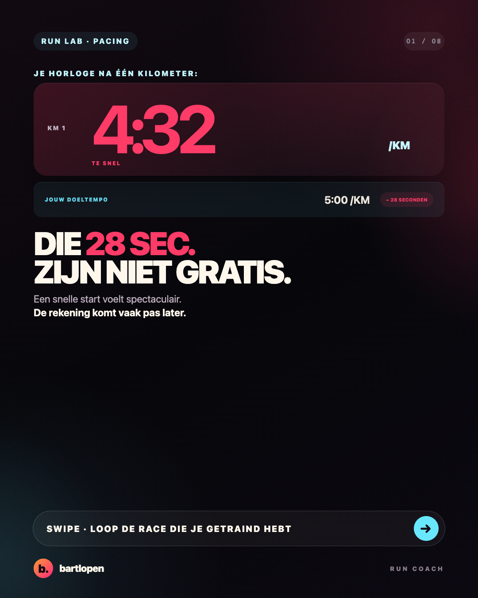
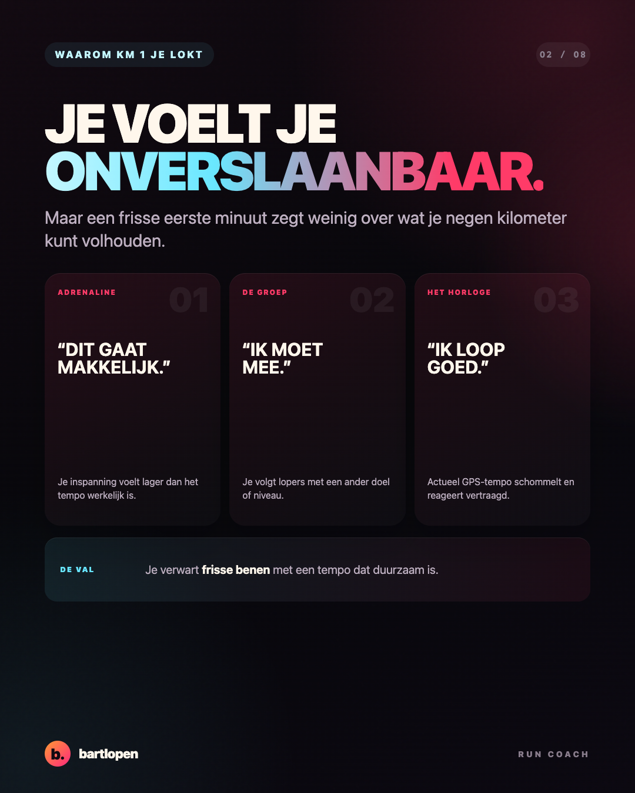
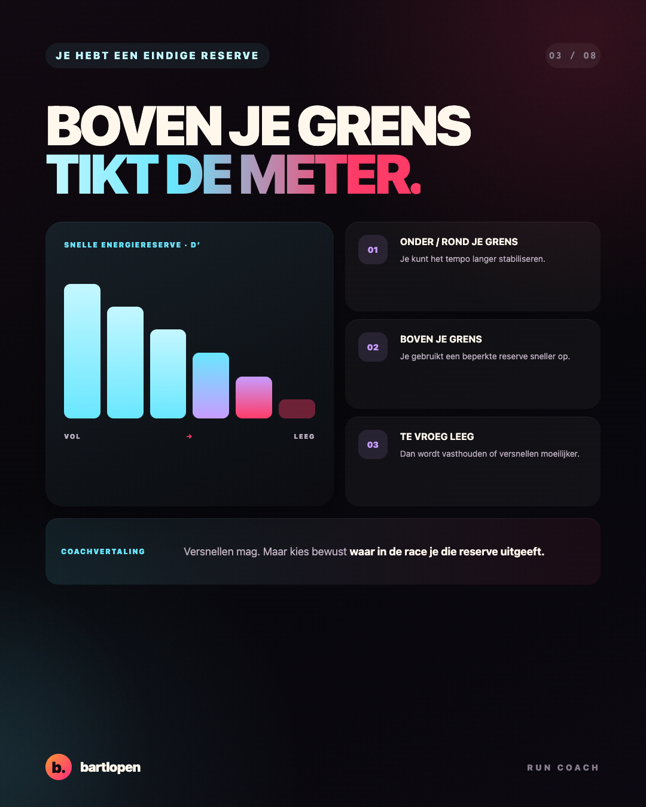
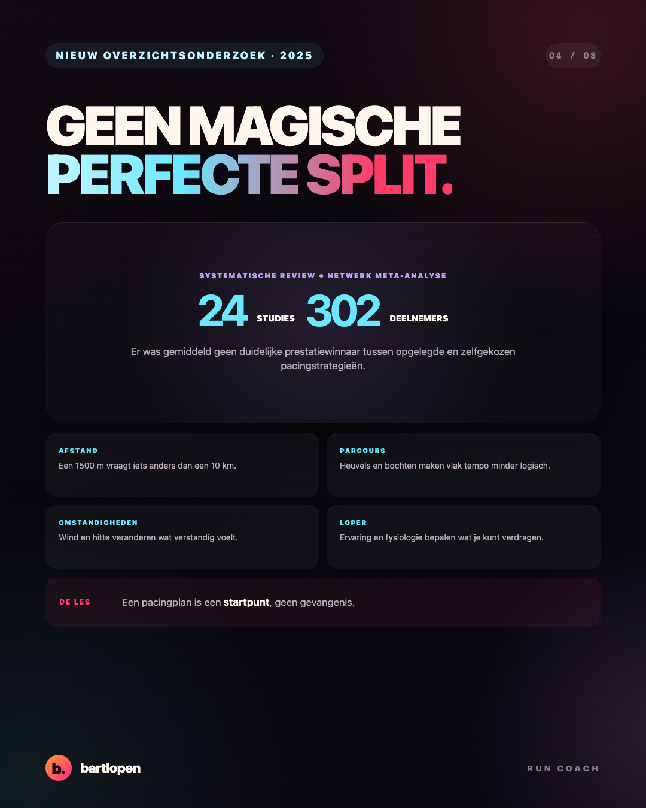
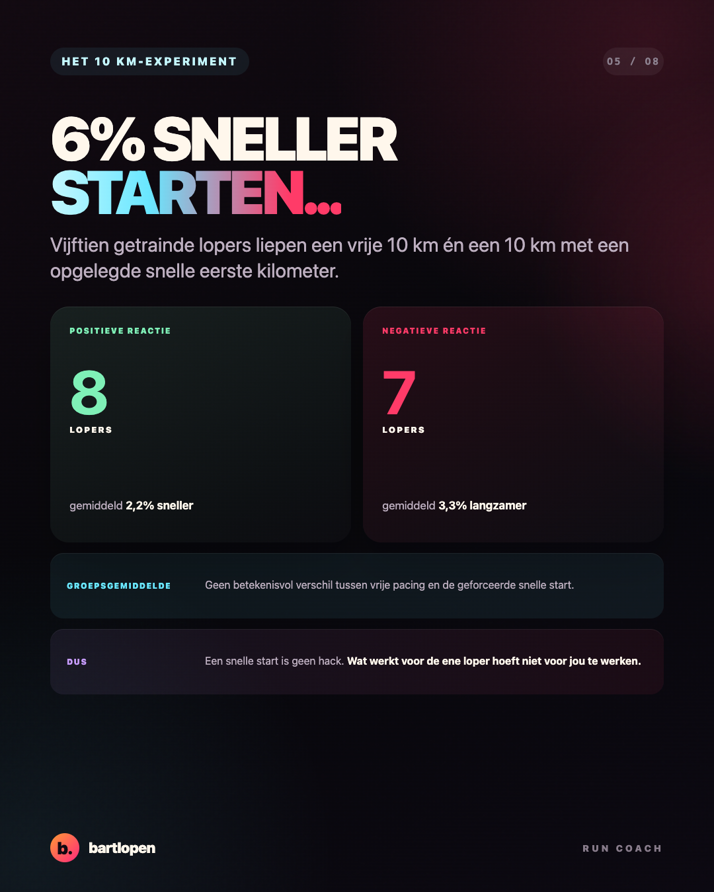
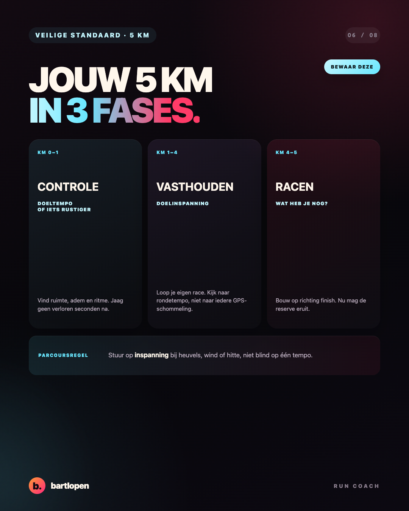
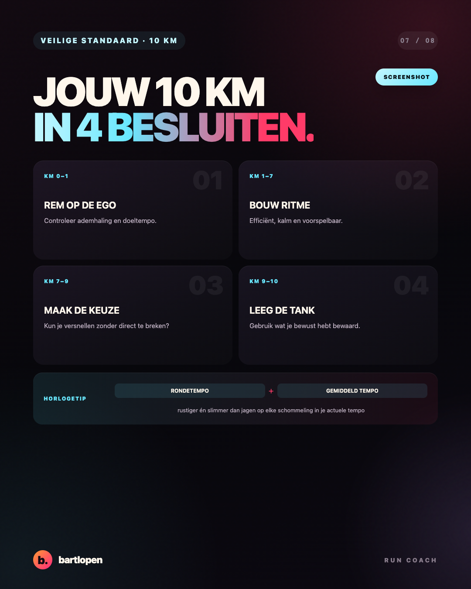
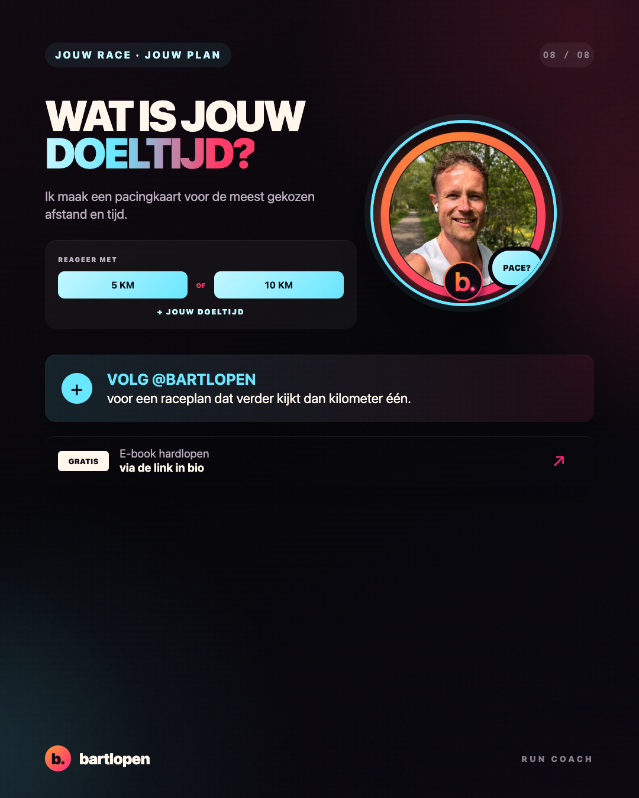

SLIDE 01 ↗De eerste
kilometer
Acht premium slides over een te snelle start, je beperkte energiereserve en praktische pacing voor een 5 of 10 kilometer. Gebouwd in 4:5-formaat voor Instagram en TikTok Photo Mode.

SLIDE 02 ↗
SLIDE 03 ↗
SLIDE 04 ↗
SLIDE 05 ↗
SLIDE 06 ↗
SLIDE 07 ↗
SLIDE 08 ↗Caption
KM 1: 4:32. DOELTEMPO: 5:00. 😅 Lekker bezig? Misschien. Maar die 28 seconden zijn niet gratis. Een snelle start werkt voor sommige lopers. Bij anderen blaast die de hele tweede helft op. Onderzoek laat daarom geen universeel perfecte pacingstrategie zien. Mijn veilige standaard: ✅ open rond je doeltempo of iets rustiger ✅ kijk naar rondetempo, niet naar iedere GPS-schommeling ✅ laat heuvels, wind en hitte meewegen ✅ bewaar je echte versnelling voor het moment waarop je weet wat je nog hebt Een 10 km win je niet in de eerste kilometer. Je kunt er wel een hoop energie verspillen. Wat is jouw volgende race: 5 km of 10 km, en wat is je doeltijd? 👇 #hardlopen #pacing #hardlooptips #5km #10km #wedstrijdvoorbereiding #bartlopen
Bronnen: systematische review en netwerk-meta-analyse van pacingstrategieën (2025), 10 km-onderzoek naar een 6% snellere start en onderzoek naar critical speed en D′ tijdens 5.000 en 10.000 meter. Het voorbeeldplan is een praktische standaard en moet worden aangepast aan parcours, omstandigheden en loper.